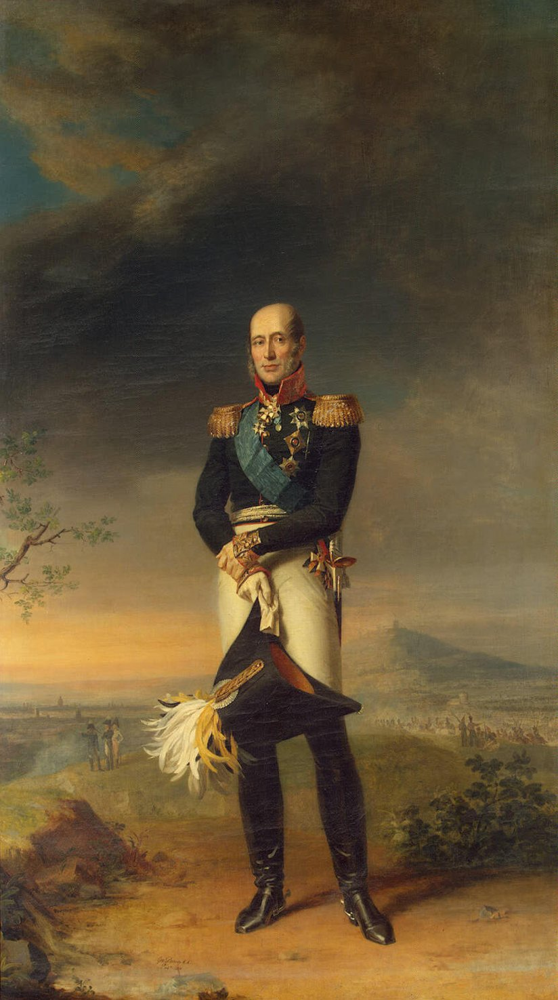
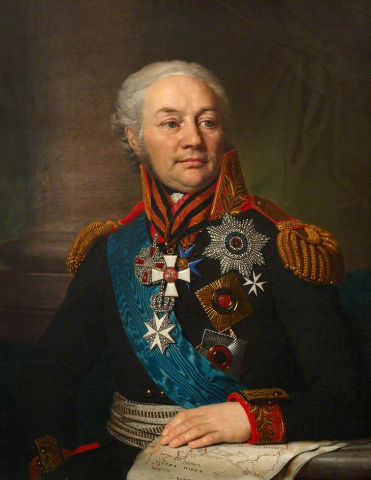
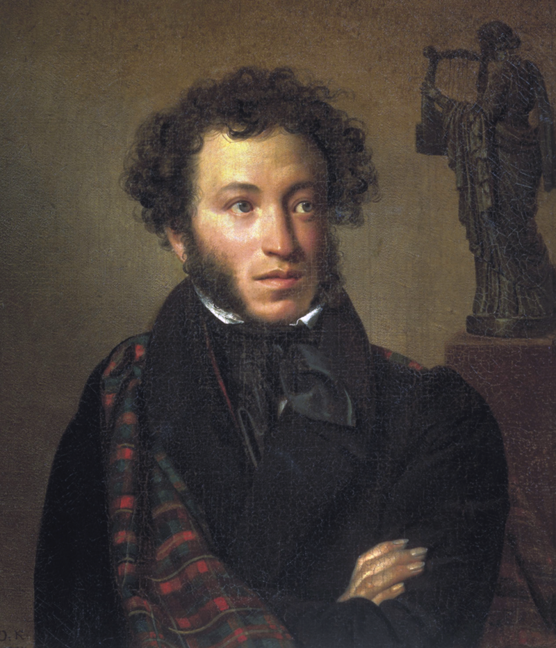
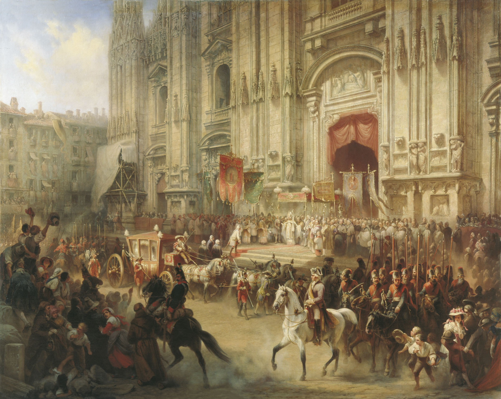

1812년 나폴레옹을 기다리는 러시아군의 내부 사정 (제2편)
게시: 2019-11-04T06:30:24+09:00
총사령관 바클레이 드 톨리가 러시아 귀족들로 이루어진 부하들로부터 미움을 받은 이유 중 하나는 이 양반이 실력파 인물이라는 점이었습니다. 그의 집안은 그의 할아버지가 오늘날 라트비아(Latvia)의 수도인 리가(Riga)의 시장을 보낼 정도로 보통 집안은 아니었지만, 정작 러시아 귀족으로 편입된 것은 군인이었던 그의 아버지가 최초일 정도로, 러시아 귀족층 입장에서는 그다지 전통있는 명문가는 아니었습니다. 바클레이는 15세의 어린 나이에 입대하여 2년 뒤 소위로 승진했고, 그 이후로 오스만 투르크나 스웨덴 등 전통적인 러시아의 적들과의 전쟁 속에서 직업 군인으로서의 커리어를 착실히 쌓았습니다. 그는 똑똑할 뿐만 아니라 전투의 광기 속에서도 침착함을 유지하고 현명한 판단을 내릴 능력을 갖추고 있었습니다. 그는 아일라우(Eylau) 전투에서 러시아군의 후퇴를 커버하며 싸우다 중상을 입기도 했습니다. 그러니까, 전형적인 유능한 군인이었습니다.

(미하일 바클레이 드 톨리(Michael Andreas Barclay de Tolly)의 초상입니다. 1812년 당시 그는 51세로서, 총사령관 하기에 딱 좋은 나이였습니다.)
프랑스군에서라면 이런 바클레이 드 톨리가 그다지 두드러진 모습으로 보이지는 않았을 것입니다. 그러나 그가 활약했던 조직은 러시아군이었고, 러시아군 장교들은 유능함과는 다소 거리가 있는 집단이었습니다. 가령 1805년 아우스테를리츠에서 러시아군 지휘관 중 하나였던 북스게브덴 (Friedrich Wilhelm von Buxhoeveden 러시아 식으로는 Fyodor Fyodorovich Booksgevden, 이 분도 알고보면 독일계 러시아 귀족이지요) 장군은 전투 내내 술에 취해 있었고 그의 주정뱅이 지휘 덕분에 참패를 겪었지만, 그 이후에도 주요 요직을 맡는데 아무 지장이 없었습니다. 가령 1808년 핀란드 침공 작전 때 러시아군의 총사령관이 바로 이 북스게브덴 장군이었고, 바클레이 드 톨리는 그 밑에서 복무했습니다.

(오랜만에 보시는 북스게브덴 장군의 복스러운 얼굴입니다. 그런 역적질에 가까운 지휘를 하고도 군법회의는 커녕 계속 해서 고위 지휘관 역할을 맡을 수 있었던 것은 그의 와이프가 러시아의 권문세가 오를로프(Orlov) 가문 출신의 공녀 나탈리아 알렉세예브나(Natalia Alexeyeva)였던 것과도 무관하지 않았을 것입니다.)
북스게브덴의 경우처럼 러시아군 장교들의 자질이 전반적으로 떨어지는 이유는 슬라브 특유의 민족성... 따위가 아니라 결국 사회 구조적인 문제였습니다. 가령 러시아군 소위의 급여는 유럽 전체에서 가장 적은 편이었습니다. 심지어 장교로서 부대에 의무적으로 지불해야 하는 식비가 급여보다 더 많을 정도였습니다. 이는 러시아의 전반적인 경제력이 떨어지기 때문이기도 했지만, 기본적으로는 굳이 급여 따위에 생계를 의존하는 사람은 장교로서 체면이 서지 않는 인간이라는 고정 관념이 크기 때문이었습니다. 그렇다고 언제까지나 직장 생활하면서 돈을 쓰기만 하고 벌지 않을 수는 없었으니 그런 적자 인생을 탈출하려면 빨리 승진을 해야 했는데, 그 승진이라는 것이 실력이나 실적 순이 아니라 철저하게 배경과 연줄에 의한 것이었습니다. 그러다보니 같은 귀족들 중에서도 하급 귀족들은 도무지 승진이 되지 않았습니다. 이런 상황은 러시아의 유명 시인 푸쉬킨(Alexander Pushkin)의 소설 '대위의 딸'(Kapitanskaya dochka)에서 쉽게 보실 수 있습니다. 이 소설 속에 등장하는 이반 미로노프(Ivan Mironov)는 10대 후반의 딸을 둘 정도의 나이인데, 계급이 고작 대위입니다. 또 맡은 보직도 어느 황량한 시골 마을의 수비 대장이지요.

(제 나이대의 사람들에겐 '삶이 그대를 속일지라도 슬퍼하거나 노여워하지 말라'라는 싯귀로 유명한 러시아의 대문호 푸쉬킨입니다. 제가 중학생일 때 이 분의 소설 '대위의 딸'이 학생 필독서 중 하나여서 읽었는데, 솔직히 이게 왜 필독서까지나 선정되었는지 잘 모르겠습니다. 본인의 싯귀와는 반대로, 이 분은 와이프와 러시아 근위대 소속 어느 프랑스인 장교와 불륜 문제가 발생하자 그 프랑스인 장교와 결투를 벌인 끝에 37세의 나이로 요절했습니다.)
이렇게 장교들을 귀족들 중에서만 선발하는데다, 그나마 능력이 아니라 연줄 위주로 승진을 시키다보니, 지휘관 중에 정말 일 잘하는 장교는 찾기가 그리 쉽지 않았습니다. 소수일 수 밖에 없는 고위 귀족층 자제 중에서만 후보를 뽑다보니 당연히 자질이 뛰어난 사람이 많지 않았고, 무엇보다 이미 가진 것도 많고 노력하지 않아도 되는 고위 귀족 출신 장교가 열심히 할 이유도 없었으니까요. 아마 제 블로그를 오래 출입하셨던 분들은 이런 문제에 대해 '영국군도 똑같지 않았던가?' 라고 생각하실 수 있습니다. 맞습니다. 영국 육군도 똑같았습니다. 그래서 영국 육군도 여러모로 러시아군과 비슷한 문제, 즉 무능하고 항상 술에 쩔어지내는 장교들이라는 문제를 안고 있었습니다. 사병들을 죽도록 채찍질을 하는 체벌 문화가 팽배한 군대가 유럽에서 영국과 러시아 정도였다는 것도 공통점이었지요. 왜 영국에서만 웰링턴과 같은 명장이 나왔는지에 대해 궁금해하시는 분도 있을텐데, 그건 잘못된 궁금증입니다. 영국에서만 그런 특별한 인재가 튀어나온 것은 아니었거든요. 제2차 대불동맹전쟁에서 러시아의 혁혁한 전과를 책임졌던 수보로프(Alexander Vasilyevich Suvorov) 장군 같은 경우가 그 예입니다. 웰링턴은 영국이라는 막강한 조국의 버프를 많이 받아서 유명해진 인물이고, 실제 군사적 역량은 수보로프가 훨씬 뛰어났다고 할 수 있습니다.

(1799년 이탈리아 밀라노에 입성하는 수보로프입니다. 이렇게 밀라노에 입성하기 전까지 수보로프는 모로, 막도날, 주베르 등 쟁쟁한 프랑스 혁명군의 장군들을 모조리 무찔러 그의 명성을 드높였습니다.) 그런 장교들 중에서 냉정하고 지적이며 부지런하고 유능한데다 용감하기까지한 바클레이 드 톨리는 짜르 알렉산드르의 눈에 단연 두드러지게 보였습니다. 알렉산드르도 평화 시기라면 어땠을지 모르겠지만 나폴레옹과의 갈등이 높아지자 이 51세의 실력파 독일인을 아예 국방부 장관으로 임명해버렸습니다. 원래대로 하면 그냥 '누군가는 소를 키워야 하지 않겠나' 정도의 인식으로 승진시켜준 독일계 귀족에 불과했는데, 갑자기 짜르의 눈에 들어 쑥쑥 승진한 바클레이 드 톨리는 주변 러시아 장군들의 질투를 한몸에 받았습니다. 이렇게 다른 러시아 장군들이 자신의 승진을 질시한다는 것을 잘 알고 있던 바클레이는 다른 장군들의 협조를 구하기보다는 모든 것을 자신이 직접 관리 감독했는데, 원래부터 강직하고 차가운 성격에 그런 꼼꼼한 관리 감독까지 더해지니 그를 미워하는 분위기는 더욱 강해졌습니다. 하지만 러시아인들이 그를 무시하게 된 결정적인 것은 짜르 알렉산드르 탓이었습니다. 과연 알렉산드르는 무슨 잘못을 저질렀던 것일까요 ?
Source : 1812 Napoleon's Fatal March on Moscow by Adam Zamoyski https://en.wikipedia.org/wiki/Michael_Andreas_Barclay_de_Tolly https://en.wikipedia.org/wiki/Alexander_Suvorov https://en.wikipedia.org/wiki/Alexander_Pushkin